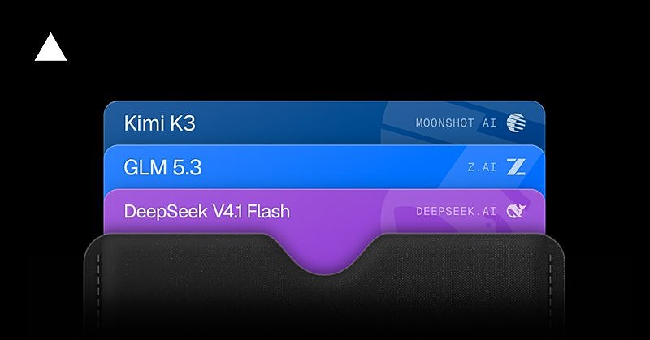

AI 日报 · 10月23日
从主动代理到即时决策：AI 产品进入工作流
Anthropic 的 Claude Duet 开放候补研究预览，OpenAI 将 Decisions API 推向正式可用；Every 的团队访谈把持续试验、评估与产品化串成一条线。Builder 关注企业安全、模型路由和新工具的实际采用。
主动代理
即时决策
企业落地
安全评估
4
Builder 动态
3
今日上榜项目
2
产品发布
1
公开视频
今日要点
主动整理待办，也会在关键动作前询问
Anthropic 10 月 21 日开放 Claude Duet 候补名单，面向美国 Pro 与 Max 用户。它在独立应用中根据已连接应用提供晨间简报、跟踪待办并继续处理任务；这仍是研究预览，使用量与 Claude 方案共享。
给有限答案问题一条更短的调用路径
OpenAI 10 月 22 日宣布 Decisions API 正式可用，基于 GPT‑6 Luna，返回概率、选项或分数。官方称在其比较条件下可比经 Responses API 调用 Luna 快至 10 倍；具体延迟仍须在真实负载中测量。
深度对话
Every：企业怎样设立前沿试验团队
Every 原频道 10 月 21 日节目讨论，小团队如何持续试新模型，又不让所有员工陷入追逐工具的循环。以下是受访团队自身的实践经验。
试验者与工程化者配对
团队用“海盗”和“建筑师”区分快速探索与把有效原型整理成可维护系统的工作；实验先证明价值，再进入产品或服务。
建立个人化评估
负责评估的成员提议把“模型太迎合用户”等主观感受写成可反复检查的测试，并让团队成员参与基准建设。
原型要解决具体工作问题
节目展示了减少标签页分心的浏览器、理解读者的写作插件和名为 Minga 的任务编排器；这些是团队展示的探索项目，并非普遍适用的生产方案。
资讯精选
官方发布与延伸阅读
Anthropic｜Claude Duet 的预览范围
Duet 首先向美国 Pro 与 Max 用户开放候补研究预览，支持 iOS、Android 与网页。公告提醒它仍可能误判优先级，重要行动会先征询用户。
Builder 动态
把新能力放回真实工作里
Cat Wu｜Duet 希望主动接手工作
Anthropic 的 Cat Wu 说，团队听到用户希望 Claude 更主动，因此让 Duet 发现待办并在用户提出要求前推进。具体可用范围仍以官方研究预览说明为准。
Dan Shipper｜前沿团队分担试验成本
Every 的 Dan Shipper 认为，跟进模型变化需要专门小组；其他同事可以采用验证过的发现。他的帖子列出了节目讨论的评估、写作工具与编排原型。
Aaron Levie｜安全工作仍需要人来把关
Box 的 Aaron Levie 认为，Agent 会加快查找、修补与攻击漏洞的速度，但企业仍需人员确定优先级、复核发现、修复并响应事件。这是他的行业判断。
Guillermo Rauch｜小模型加入 Token Pass
Vercel 的 Guillermo Rauch 称 DeepSeek V4.1 Flash 已加入 Token Pass，适合承担大模型规划后的子任务。低成本和速度是他的产品评价，实际表现需按任务测试。

GitHub Trending
今日榜单的三个工具


按 10 月 23 日 GitHub Trending 实时榜单筛选，避开昨日重点；星标、分叉与语言是本次 GitHub API 快照，随后会变化。用途按仓库自述整理。
今日思考
主动代理会自己发现任务，即时决策接口会更快地完成高频分类；两者都把“什么时候行动、何时交给人、如何复核”推到产品设计前面。Every 的前沿团队经验则提醒：试验本身需要清晰的评估与沉淀路径。今日一问：你的产品里哪一个高频决定可以先限定答案范围，并记录人工复核结果？
参考来源